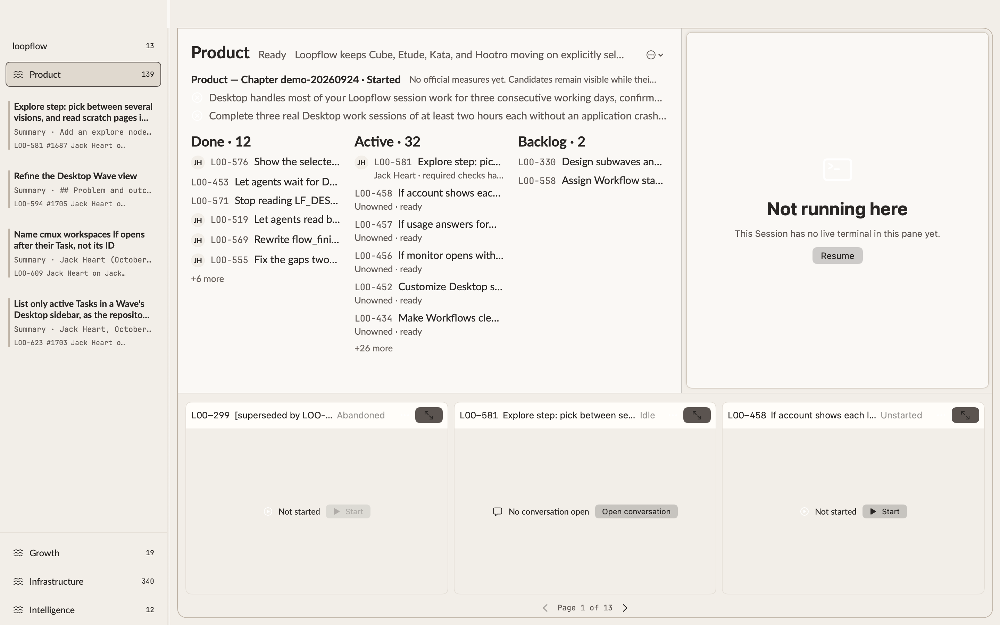
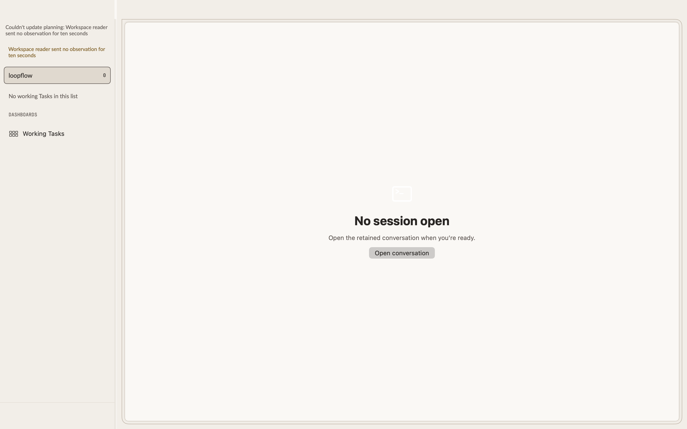

Wave view demo
Decision needed: the view works on live data now. Walk the runbook in Loopflow Dev (already open), then answer the questions at the end. I found four problems before you looked; they’re listed below.
Fixed on this branch
Planning failed with missing field `interactive`. Graphs recorded before #1652 store the old key "human". The draft migration graph_node_interactive.sql renames it in every recorded step (381df6246e). All 796 recorded Graphs now read.
Product Wave in Loopflow Dev

What I found before you looked
- Initials appear while you’re solo. You’re counted as two people: 39 owners carry your email, 16 carry only your name.
- No GitHub pictures yet, only initials. The GitHub lookup wasn’t built.
- Unstarted Tasks show in Active (“Unowned · ready”). The roadmap’s
waitingsection holds 89 unstarted Tasks, so Backlog shows only 2. - The strip starts with an abandoned Task (LOO-299) and runs to 13 pages, because it includes finished Tasks.
Before (installed release): planning failed there too, so there’s no comparison image.

Runbook (once planning loads)
1. Open Loopflow Dev and select the product Wave in the sidebar.
Expected: Done · Active · Backlog board on the left, the Wave conversation on the right, three live tiles below with “Page 1 of N”.
2. Hover over the Done header, then click it and type 14.
Expected: “· last 7 days” appears on hover; the number edits in place, and Done widens. Relaunch: still 14.
3. Look at Done and Active rows.
Expected: no profile pictures (solo). With two people on the board, GitHub pictures and names appear.
4. Page the strip, then click a tile header.
Expected: the full Task opens with a link back to the Wave and its sidebar row selected. Back returns you to the same page.
5. Select the repository at the top of the sidebar.
Expected: the same view over every repository Task. Backlog lists unstarted Tasks with Start.
6. In a terminal:
lf desktop state --json | jq '.windows[0].view_parts', then lf desktop capture -p board.
Expected: board, session and tiles parts, with done_days and the strip page; the board as text.Questions
- Active vs Backlog: (a) bucket by state, so unstarted Tasks go to Backlog whatever their roadmap section; (b) keep the roadmap sections.
- Strip contents: (a) only unfinished Tasks; (b) Active Tasks only; (c) leave as is.
- People: (a) fix the solo count (one person per name or email) and build GitHub pictures in this PR; (b) fix only the solo count now and file GitHub pictures as its own Task.
- Anything you see in steps 1–6 that should change.